Ultra-Scalable Graph-Based Nearest Neighbor Indexing with PiPNN
Meta · FAISS team · September 2026
University of Maryland, College Park · Google
Overview of PiPNN work
- Proximity graph construction: 5.9× faster on CPU, 13.3× faster on GPU — vs. quantized Vamana · Jasper
- k-NN graph construction: 5.9× faster on CPU, 2.9× faster on GPU — vs. PyNNDescent · NN-Descent
- Also: SISAP 2026 Task 1 — first place. Ongoing: dynamic updates · distributed builds

better
The papers
Outline
Background — graph indexes, why build time matters, the search bottleneck.
PiPNN (KDD 2026) — search-free construction: partition · compare locally · prune online.
Results — state-of-the-art index quality at a fraction of the build time.
Ablations.
Turbocharging PiPNN (VecDB @ VLDB 2026) — quantized fused top-k on CPU and GPU; direct k-NN graphs.
SISAP 2026 — the same recipe under a fixed hardware budget.
What we’ve shown — and what’s next.
Part I Background
Nearest neighbor search
Must Approximate for Large Datasets
Graph indexes: fast to query, slow to build
Points are vertices; edges connect near (and navigationally useful) points; a query walks the graph greedily toward its target.
Pros — state-of-the-art QPS at high recall · any distance: L2, cosine, inner product
Cons — slow to build · space overhead
This talk: build time
Why build time matters
- Indexes are rebuilt periodically
- New datasets mean parameter tuning
- Scalability issues for billion scale.
- ANNS is a subroutine — clustering, k-NN graph construction, etc.
prior methods Modern Way of Building Graph Indices
For each point:
- Candidate generation — search the partial index.
- Prune — choose directionally diverse edges.
Vamana (DiskANN) · HNSW · NSG — all instances of this recipe.
The search bottleneck
- Build time is dominated by search
- Fails to leverage that the problem is offline
| Vamana build | Search (s) | Prune (s) | Search share |
|---|---|---|---|
| OpenAI-ArXiv | 342.3 | 13.4 | 96% |
| MS-SPACEV | 474.1 | 282.1 | 63% |
| Wikipedia-Cohere | 4663.1 | 385.6 | 92% |
On average, ≈ 84% of build time is spent searching.
Goal: generate good candidates without searching index
Part II PiPNN: search-free construction
PiPNN: Ultra-Scalable Graph-Based Nearest Neighbor Indexing — KDD 2026

PiPNN, end to end
PiPNN(X, params): G ← (X, ∅) B ← Partition(X) ▸ overlapping leaves for leaf b ∈ B in parallel: Eb ← Pick(b) ▸ dense in-leaf k-NN candidates G.PruneAndAddEdges(Eb) ▸ per-point online prune if params.final_prune: for x ∈ X in parallel: RobustPrune(x) return G

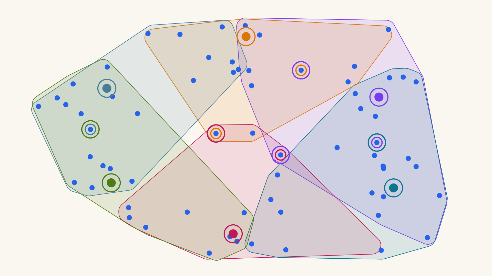
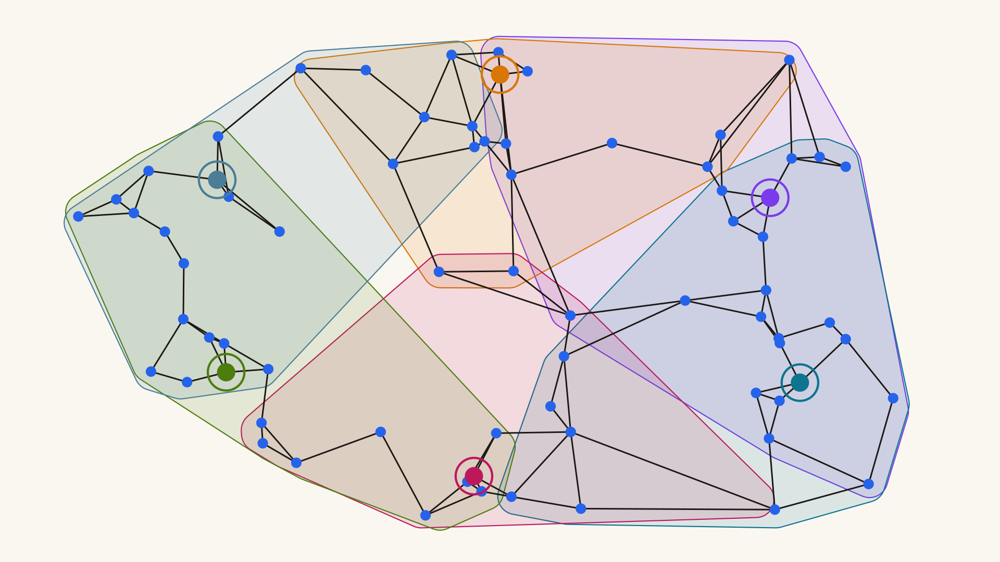
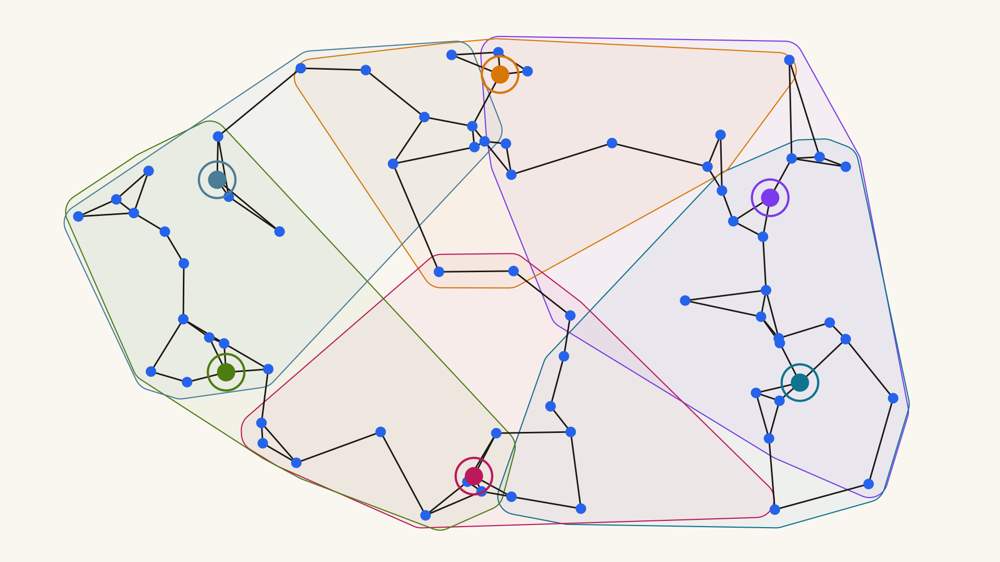

Partitioning: overlapping leaves by ball carving
- Ball carving — sample a random subset of points as partition leaders (the ringed dots); assign every point to its closest leader; any cell larger than C_{\max} (typically 1024) recurses.
- Overlap via fanout — assign each point to its top-f closest leaders, so close neighbors are not split across a cell boundary.
- Multi-level fanout — make f a function of depth (e.g. 10 at the top, 3 below).
Multi-level fanout: 1.35–2.5× faster than replication, same quality.
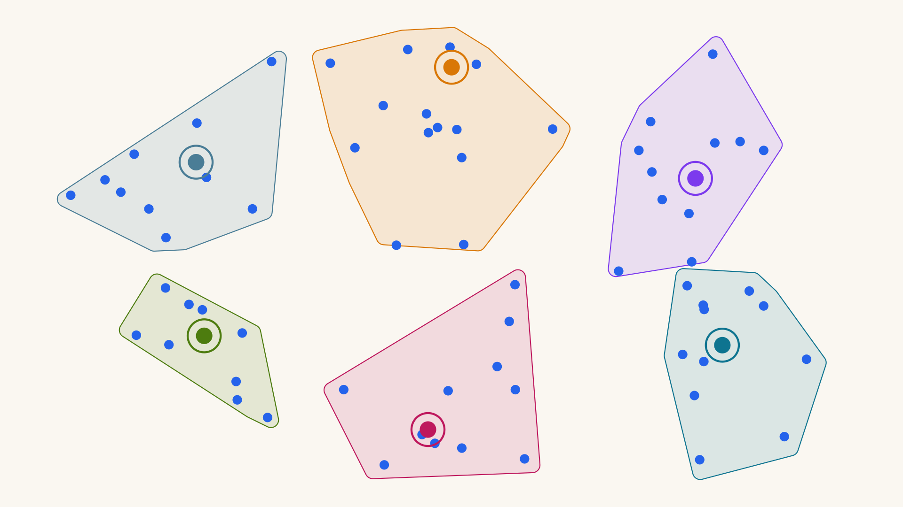
Picking from Leaves
- Inside a leaf, compare everything to everything.
- Each point keeps its two nearest co-members — directed 2-NN edges.
- Symmetrize — add back-edges.
- Two per leaf is enough.
The pruning problem
- The union of all leaf graphs is dense
- Much of it is redundant — near-parallel edges, plus back-edges piling into hubs.
- We must prune — but the classical prune (RobustPrune) is offline: complete candidate set, globally sorted; buffering the parallel streams is slow and memory-hungry.
Needed: an online prune in bounded memory.
HashPrune: an online pruning reservoir
Per source point p: hash each candidate’s residual direction c - p. On a bucket collision, keep the nearer; when full, evict the farthest.
- 8-byte slots (4-byte id · 2-byte hash · 2-byte bf16 norm); reservoir maintenance is at most ~5% of construction time.
HashPrune is history-independent
Theorem. For a fixed hash function h_p, candidate set C, and reservoir size \ell, the final adjacency list produced by HashPrune is unique — independent of the insertion order of candidates in C.
Corollary. Fixing the random seeds for partitioning, PiPNN is deterministic — the same index on every build, regardless of thread scheduling.
And a final prune, for extra sparsity
We found:
- ~10% QPS increase at recall ≥ 0.9
- Around ~10% of running time
Part III Experiments
Machine 4× Intel Xeon Platinum 8160 — 192 cores, 1.5 TB DRAM · billion-scale: GCP c4-highmem-288 — 288 vCPUs, 2.2 TB
Datasets BigANN 1B·128d · DEEP 1B·96d · MS-SPACEV 1B·100d · MS-Turing 1B·100d · Wikipedia-Cohere 35M·768d · OpenAI-ArXiv 2M·1536d
Baselines Vamana (ParlayANN) · HNSW · HCNNG (ParlayANN) · MIRAGE · FastKCNA
Same quality, an order of magnitude faster
Up to 11.6× faster than Vamana and 12.9× faster than HNSW at state-of-the-art index quality (average speedups 6.32× and 10.4×).

better
Billion-scale indexes built in under 20 minutes on a single multicore machine.
Query quality holds — billion-scale datasets

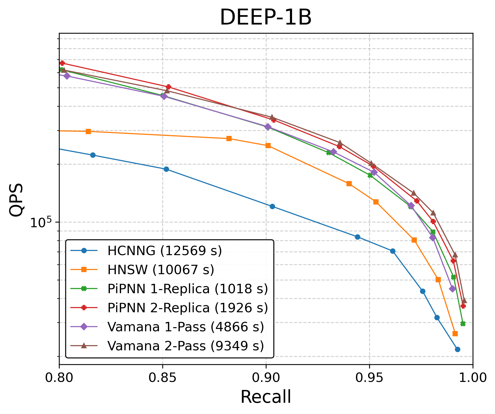
better
QPS-vs-recall against the search-built baselines — build times in the legend.
Query quality holds — high-dimensional embeddings

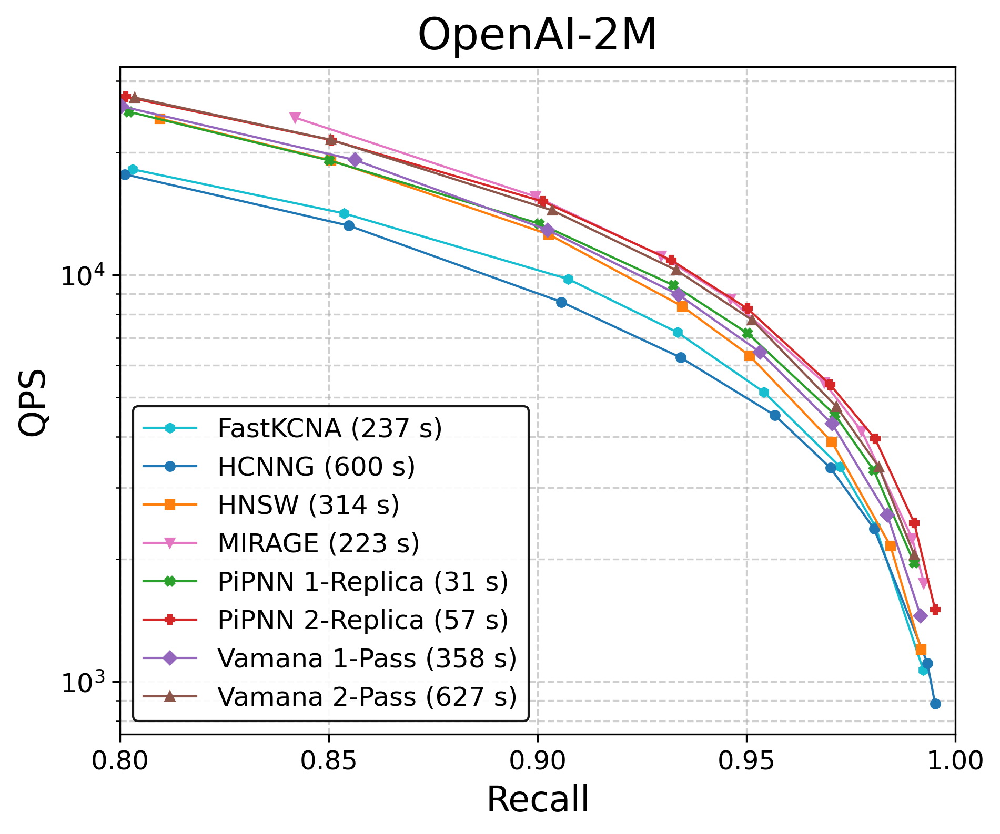
better
Wikipedia-Cohere at 768d, OpenAI-ArXiv at 1536d — same picture.
Why: an order of magnitude fewer cycles and cache misses

Better locality → superior instructions per cycle: 1.26 vs. 0.44 (Vamana) and 0.33 (HNSW).
Application: PiPNN builds k-NN graphs faster
The fast build pays off downstream — k-NN graphs by build-index-then-query-all: 2.2–6.9× faster than HNSW, 1.4–1.7× than Vamana end to end.
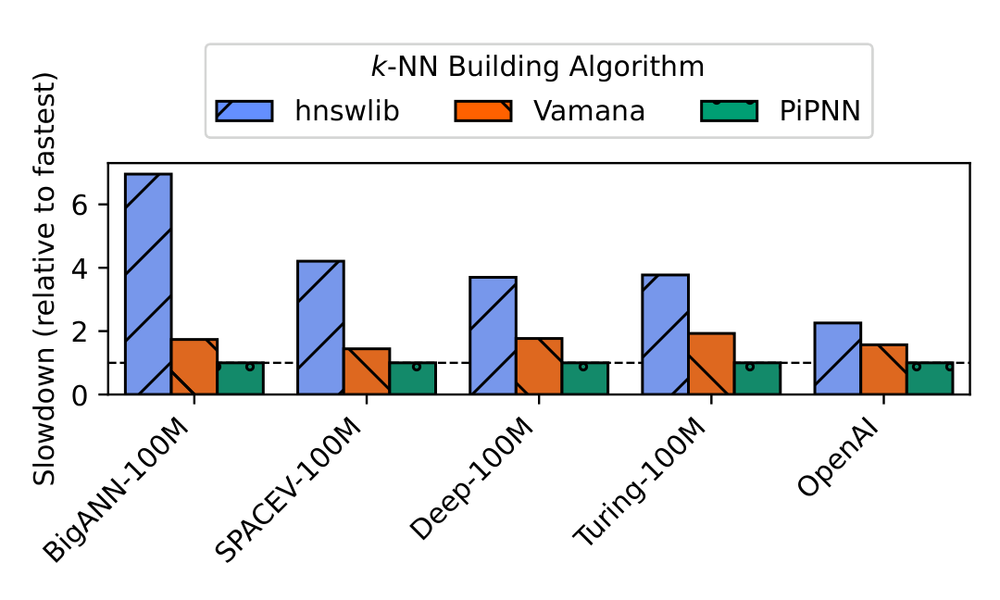
better
Part IV Ablations
Multi-level fanout beats replication
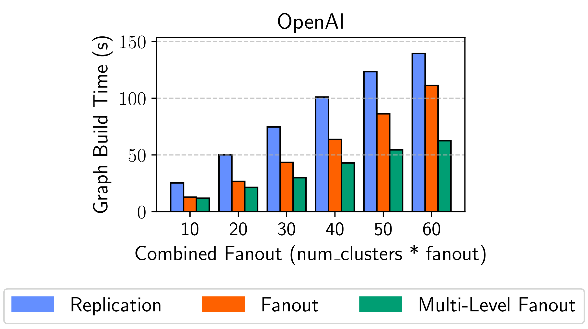
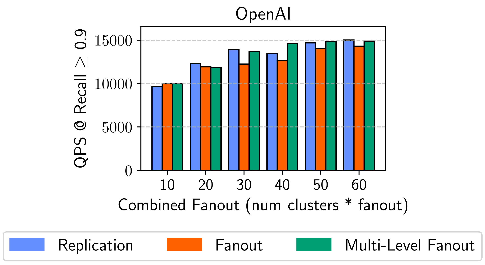
better
better
Multi-level fanout builds 1.35–2.5× faster than replication at the same quality.
Dense ball carving works the best
Partitioning strategies compared, rest of the pipeline fixed — dense (k-)ball carving wins:

better
Which candidates to pick inside a leaf
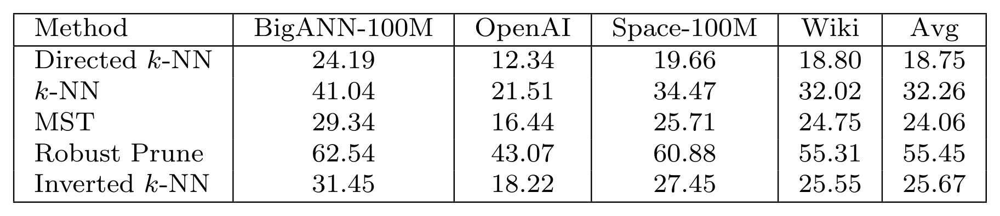

better
Bi-directed k-NN and MST both work.
k-NN degree in the leaves
Denser k-NN graph in the leaves → denser PiPNN index. Sweet spot for quality is between 2 and 4.

better
The leaf kernel implementation matters

better
Implementation of top-k kernels has highest impact on running time
Part V Turbocharging PiPNN
Turbocharging PiPNN for Proximity and k-NN Graph Building — VecDB @ VLDB 2026
Top-k is the majority of the work

- Partitioning: each point finds its top-f leaders.
- Leaf building: each point finds its top-2 inside the leaf.
Same kernel twice: score a dense block, keep the top k.
CPU: quantize, then fuse the top-k
- Quantize so the scores run on integer SIMD dot products — byte codes needed for VNNI; less memory traffic too.
- We use TurboQuant variant (fast Walsh-Hadamard rotation + Lloyd-Max Codebook) - could use others
- Fuse scoring with top-k selection — the distance matrix is never materialized.
The kernel implementation dominates

Implementation of top-k kernels has highest impact on running time
Same leaf, same core: 12.90 ms → 1.04 ms — 12.4× from the kernel alone.
CPU build times
4–8× faster than quantized Vamana (geomean 5.9×); 40.7× faster than unquantized Vamana; up to 8× faster than the original PiPNN.

Seconds; green = fastest per row. VF32 / VQ = unquantized / quantized Vamana; NNDQ = PyNNDescent. Right half: direct 10-NN graphs — revisited at the end.
Billion-point indexes in about 10 minutes on one machine.
Index quality preserved

better
Quantized PiPNN matches FP32 PiPNN’s QPS at every recall: geomean ratios 0.98 (TQ4) and 0.99 (RSQ8).
GPiPNN: keep the tensor cores fed
- Regularize the leaves — cap and pack them — so every leaf is one contiguous segment of a dense slab and no block straggles.
- Feed asynchronously — TMA streams tiles into a shared-memory ring while the tensor cores consume the current stripe.
- Score with WGMMA, select in registers — the score tile is never written to memory.
Replace recursion with fixed number of assign-then-sort rounds
GPU build times
No quantization anywhere: geomean 8.1× over Jasper, 16.3× over CAGRA. With RSQ8: 13.3× and 27×, up to 43.7× and 50×.

Unquantized CAGRA builds its initial graph with NN-Descent, which is L2-only — hence the “–” cells on the MIPS datasets.
GPU index quality
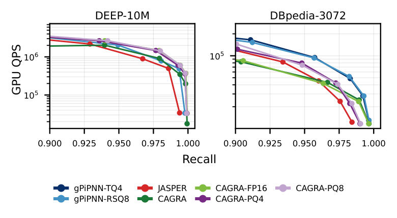
better
Same picture as on CPU: the curves overlap. The speedups are build-time only.
Direct k-NN graphs: drop the prunes
Keep partition + pick: the leaf top-k rows are the k-NN graph.
Direct k-NN graphs: results

better
10-NN graphs at recall ≥ 0.9: 4–10× faster than PyNNDescent, 5–20× than Vamana (geomeans 5.9× / 10.3×).
Up to 13× on CPU and 6.6× on GPU over the prior best; a billion-scale 10-NN graph in under 16 minutes.
SISAP 2026: first place in Task 1
- Task: the all-15-NN graph of 6.35M × 1024-d bge-m3 Wikipedia embeddings, fastest build subject to recall15@15 ≥ 0.80 — inside an 8-vCPU / 24 GB container, no AVX-512
- 187.60 s at 0.818 recall on the held-out corpus — fastest qualifying submission
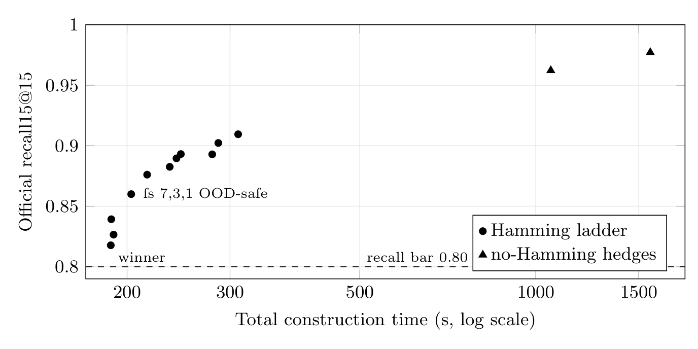
What we’ve shown
- Partitioning-based approaches are faster for state-of-the-art ANNS index construction
- HashPrune guarantees deterministic index builds
- k-NN graphs can be built directly with this approach, much faster than the alternatives
Ongoing — dynamic updates · distributed builds
better
Thank you — questions?
Paper · arxiv.org/abs/2602.21247
With thanks to my co-authors — Richard Wen · Guy Blelloch · Laxman Dhulipala · Lars Gottesbüren · Rajesh Jayaram · Jakub Łącki · Vahab Mirrokni
Supported by an NSF Graduate Research Fellowship and Google Student Researcher appointment.
Graduating in May · trubel@umd.edu
Backup: QPS-recall, MS-SPACEV and MS-Turing
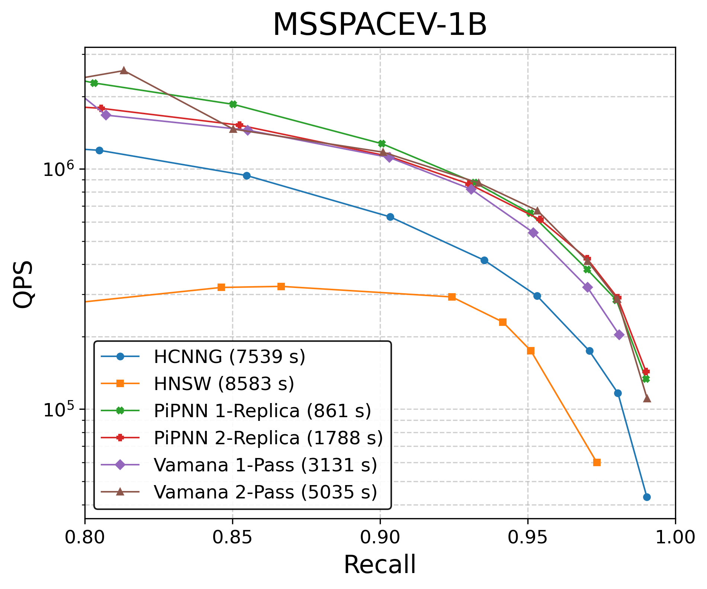

Backup: which partitioning method?
QPS-vs-recall by partitioning strategy — randomized (k-)ball carving leads across datasets:
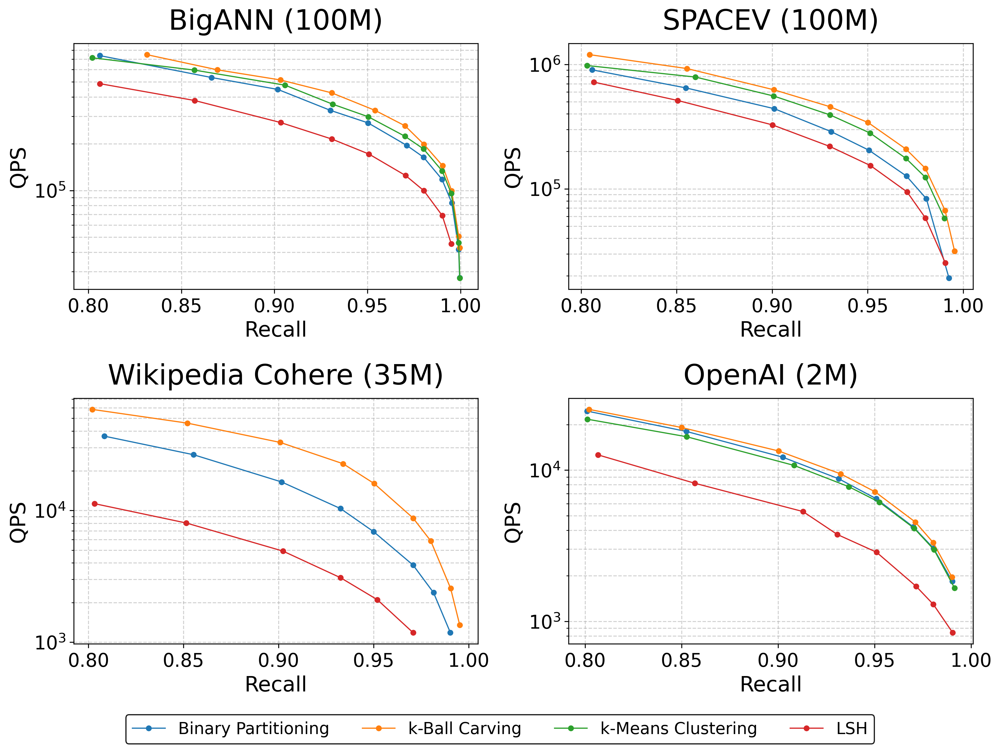
Backup: Partition pseudocode
Partition(S, depth):
if |S| ≤ Cmax: emit leaf S; return
L ← sample leaders from S u.a.r. ▸ ≈1000 at the top
score S × L ▸ one blocked dense GEMM
assign each p ∈ S to its f nearest leaders ▸ f = fanout[depth]
merge undersized clusters (< Cmin) into siblings
for cluster C in parallel: Partition(C, depth+1)
- Recursion runs 2–3 levels in practice; leaves cap at C_{\max}, typically 1024.
Backup: history-independence — proof sketch
Theorem For a fixed hash function h_p, candidate set C, and reservoir size \ell, the final adjacency list produced by HashPrune is unique — independent of the insertion order of candidates in C.
Proof sketch (i) The collision rule means bucket b ends up holding the D(p,\cdot)-minimum among candidates hashing to b. (ii) The eviction rule always removes the farthest, so the reservoir ends as the \ell nearest bucket winners. Both sets are determined by (h_p, C, \ell) alone — order appears nowhere. \square Full proof: paper’s full version (arXiv).
Backup: HashPrune parameter tuning
Default m = 12 hyperplanes; the paper tested b \in \{6, 8, 10, 12, 14, 16\} and only b = 6 degraded performance — bucket resolution (directional diversity) trades against collision rate.
Backup: RobustPrune
RobustPrune(p, C, α) Sort C by D(p,\cdot). Repeat until |N(p)| = R or C is empty: move the nearest remaining y into N(p), then delete every remaining z with \alpha \cdot D(y,z) \;<\; D(p,z), \qquad \alpha \ge 1. Introduced in DiskANN (Subramanya et al., NeurIPS ’19).
Backup: HashPrune, as implemented
Insert(p, candidate c, dist d):
if full and d ≥ farthest: return ▸ early reject
h ← sign sketch of (c − p) ▸ m = 12 bits, precomputed
pos ← binary-search slots by h
if collision at h: keep the nearer of the two
elif not full: shift-insert at pos
else: overwrite the farthest, restore hash order
- One reservoir per point; each slot is 8 bytes: 4-byte id · 2-byte hash · 2-byte bf16 norm.
- Slots stay sorted by hash — insert is a binary search, not a scan.
- Reservoir maintenance is ≤ ~5% of total construction time.
Backup: the v1 leaf kernel (Eigen + Highway)
LeafKNN(leaf b, k): ▸ PiPNN I (v1) leaf kernel
D ← all-pairs distances in b ▸ Eigen symmetric GEMM: P·Pᵀ + norms
for point i ∈ b:
pack (D[i,j], j) into 64-bit keys
k nearest ← VQPartialSort(keys, k) ▸ Highway SIMD
return bi-directed edges Eb
- Per-row top-k by vectorized partial sort — distance and index bit-packed into one 64-bit key, sorted with Google Highway’s
VQPartialSort. - This is exactly the kernel the PiPNN II fused self-join replaces.
Backup: Beam search
BeamSearch(G, q, source s, beam width L):
B ← {s} ▸ beam: best L points seen
V ← ∅ ▸ visited
while B ∖ V ≠ ∅:
p ← argminu ∈ B∖V D(u, q)
B ← B ∪ Neighbors(p) ▸ score every neighbor vs. q
V ← V ∪ {p}
if |B| > L: B ← closest L points to q in B
return B
Irregular accesses lead to poor cache performance.
Backup: beam search is latency-bound pointer chasing
Every hop loads an adjacency list, then gathers each neighbor’s vector from a random address to compute its distance: scattered access, poor pipelining, cache misses.
Backup: two exceptions prove the rule
- NN-Descent — no graph search: start from a random graph and iteratively refine by checking neighbors of neighbors. But the product is a k-NN graph, not a navigable search graph — a different artifact (Part V returns to it).
- HCNNG — no graph search either: candidates come from overlapping clusters via batched comparisons. But with no online prune, per-cluster edges are unioned: dense, directionally redundant adjacency lists, and query quality falls short of the search-built methods.
Search-free candidate generation exists. What’s missing is a prune that keeps up.
Backup: the RNG condition
Domination A candidate c is dominated given kept neighbors N(p) if \exists\, b \in N(p): \quad D(p,b) \;<\; D(p,c) \;\;\text{and}\;\; D(b,c) \;<\; D(p,c) — a kept neighbor nearer to p is also closer to c than p is: points nearer to p prune those farther away. The RNG rule keeps only the undominated edges (Arya & Mount ’93).
Backup: HNSW in detail
- Layered graph; each point draws a maximum level from a geometric distribution.
- Insert by greedy descent from the top layer to the point’s level.
- On each layer below: a candidate search of the partial layer graph (
efConstruction), then RNG-based selection — the domination rule on the previous backup slide — keeps M diverse neighbors; degrees are capped.
Queries descend the layers the same way.
Backup: NSG in detail
- Start from an approximate k-NN graph (itself built by another method).
- For each point: search from a navigating node over that graph to collect candidates.
- Select edges with an RNG-style rule (MRNG); patch connectivity with a spanning tree from the navigator.
No incremental insertion here — NSG refines a prebuilt graph in a single pass — yet candidate generation is still search.
Backup: Vamana (DiskANN)
- Start from an empty graph (or a random bounded-degree one).
- For each point p: beam-search the current partial graph — the visited set becomes p’s candidate list.
- RobustPrune the candidates into a sparse, diverse adjacency list; insert reverse edges (re-prune when over budget).
Queries use the same beam search over the finished graph.
Backup: MIRAGE — better graphs to search
- Improves the quality of the base graph so that the construction searches themselves get more efficient.
- Still suffers the search bottleneck — it is polished, not removed.
- In practice: out of memory at billion scale; below 0.8 recall at 100M; originally evaluated only at million scale.
Backup: FastKCNA — refine first, search less
- “Refinement-before-search”: α-prune an approximate k-NN graph first, so the searches that follow run faster.
- The searches still happen — candidate generation remains graph traversal.
- In PiPNN I’s 100M-scale experiments: on average 18.64× longer builds than PiPNN.
Backup: SymphonyQG — faster queries, same builds
- Fuses RaBitQ-style quantization into the graph layout (NGT-QG lineage): batch SIMD distance estimation (FastScan) during traversal, no re-ranking pass.
- State of the art on the query-time time–accuracy trade-off.
- The price: significant memory overhead from the fused quantization-plus-graph layout.
The pattern across all three: optimize around the search loop — never remove it.
Backup: IVF — cluster, then scan
Partition the points into clusters. A query probes its nearest centroids and exhaustively scans every point inside them.
Pros — fast to build · contiguous, SIMD-friendly scans
Cons — high dimensions force many probes per query
Backup: Locality Sensitive Hashing (LSH)
Locality-sensitive hashing Any hash family whose collision probability falls with distance: \Pr[\,\mathrm{hash}(x) = \mathrm{hash}(y)\,] \;=\; f\big(\mathrm{dist}(x,y)\big).
Backup: the first graph to try — the k-NN graph
Connect each point to its k nearest neighbors.
Problems:
- no long range edges
- lack of directional diversity
Built by e.g. NN-Descent: iterate on neighbors of neighbors.
Backup: what should the graph keep?
Every candidate edge costs degree budget. Keep edges that are near and that cover every direction: near-parallel edges are redundant, while a spread of directions routes any query home.
Backup: Properties of Graph Indices
Pros
- Very good QPS-vs-recall trade-off
- Works with many notions of distance — L2, cosine, inner product, …
Cons
- Slow to build
- Hard to distribute search across multiple machines
- Significant space overhead
- No theoretical guarantees for the methods used in practice
PiPNN works to speed up the build.
Backup: the CPU kernel — quantize, then fuse
- Quantize the vectors — TQ4 (TurboQuant) or RSQ8: a distance becomes an integer dot product plus a small per-vector correction.
- Fuse scoring with selection: each score goes straight into the top-k; the distance matrix is never materialized.
- Quality holds: QPS ratios 0.98 (TQ4) / 0.99 (RSQ8) vs. FP32 at matched recall.
Backup: score with one instruction
vpdpbusd (AVX-512 VNNI) does 64 multiply-accumulates per instruction — 16 int32 lanes × 4 byte pairs — decoded quantized codes in, int32 scores out, in registers.
Backup: AssignLeaders — top-f against a small leader set
- Partitioning’s kernel is asymmetric: every point scores against a small leader set — so pretranspose the leaders once and stream cache-sized chunks of points through.
- The fanout schedule sets k: top-10 at the root, top-3 below, top-1 deeper.
- Top-1 is an in-register argmin sweep. Top-3 / top-10 use displacement sort: each SIMD lane tracks its own top-k in k registers, and the horizontal merge is deferred to the very end.
- k = 3 stays entirely in registers; k = 10 spills to L1 — affordable, because only the root scores each point once while lower levels score every replica.
Backup: the leaf kernel — a fused self-join
- Inside a leaf every point is both query and database — so score only the lower triangle: half the distance work.
- Each score updates two top-2 trackers at once: the query row’s (in registers) and the database point’s (loaded once per panel, updated in-register, stored back).
- Lane-parallel top-2 insertion runs in 6 blends; masking retires self-pairs and padding.
- The output is leaf-2NN: each member’s two nearest co-members, symmetrized into the candidate stream HashPrune absorbs.
Backup: panel-based RobustPrune (quantized final prune)
The final-prune pass can also run over quantized byte panels; pruning-method comparison:
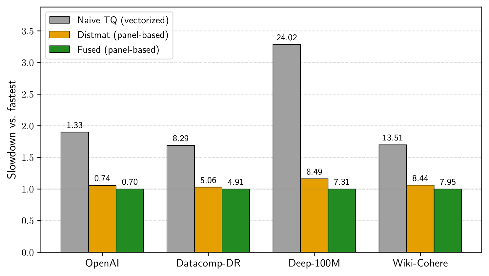
Backup: the kernel ablation, stage by stage
The fused, quantized leaf-2-NN kernel takes leaf scoring from 12.90 ms to 1.04 ms — 12.4×.
Backup: the quantization codes
- Rotate first, then quantize per coordinate — no coordinate is special afterwards.
- RSQ8 — 8-bit rotated scalar quantization.
- TQ4 — TurboQuant’s 4-bit Lloyd–Max codebook on rotated coordinates, with its inner-product estimator.
- Our TQ4 variant: replaces the residual (QJL) sketch with an extra codebook bit plus a per-vector rescale; 4-bit codes decode to int8 in-register (
vpshufb).
Backup: the template is the contribution
Distance = integer inner product + a small per-vector correction. Anything fitting it rides the same kernels — VNNI on CPU, WGMMA on GPU.
- RaBitQ, DRIVE and EDEN all fit the same template — distance = integer inner product + a small per-vector correction — and could be substituted for our quantizer without touching the kernels.
- We picked the TurboQuant variant for fast, data-oblivious O(d \log d) encoding and because its decoded codes map cleanly onto integer dot-product instructions: VNNI on CPU, WGMMA on GPU.
- In the GPU comparisons, RaBitQ is disabled at query time for every method, Jasper included.
Backup: where CPU build time goes now
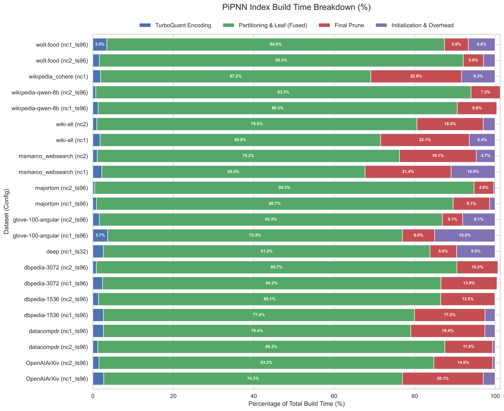
Backup: H100 in two instructions
- WGMMA — a warpgroup (128 threads) collectively issues one tensor-core matrix multiply: a 64 × 128 tile, advanced 32 contraction-bytes per step, int8 × int8 → int32 — the GPU sibling of
vpdpbusd. - TMA — the tensor memory accelerator copies whole tiles between global and shared memory from a descriptor (base, shape, stride, swizzle), instead of per-thread address arithmetic; it stages the database slab without consuming warp registers.
Goal: overlap computation and memory movement — keep the tensor cores busy.
Backup: what one step feeds — CPU vs GPU
CPU — AVX-512 VNNI vpdpbusd |
GPU — Hopper wgmma |
|
|---|---|---|
| One instruction | 1 query × 16 points × 4 dims | 64 queries × 128 points × 32 dims |
| Per dimension step (loop body) | every 4 dims: 8 queries × 4 panels → 32 instructions into 32 independent accumulators | every 64 dims: 2 instructions into one accumulator, then wait |
| Feeding the dimensions | L1 + hardware prefetch; queries pre-broadcast | TMA → 4-stage shared-memory ring; producer / consumer warps |
| Select | fused per block; two top-2 trackers; lower triangle | per finished tile, in registers; 4-lane shuffle merge; full square |
Same shape on both: score a tile, select in registers, never store the scores.
Backup: why PiPNN doesn’t just port to the GPU
- Recursive partitioning — a dynamic tree of dependent launches instead of flat bulk passes.
- Skewed bucket sizes — a launch finishes when its slowest block does: oversized leaves stall the grid while near-empty ones idle SMs.
- Lock-based HashPrune — thousands of concurrent inserts contending on per-point reservoirs serialize on locks.
Fixes: flatten · regularize · segment · sort-and-merge.
Backup: flatten — recursion becomes two sorted rounds
Sample leaders, assign each point to its f nearest, radix-sort by leader key — every bucket becomes a contiguous run. Two rounds suffice (f_0 = 8, then f_1 = 4).
Backup: regularize bucket sizes
- After sorting, run-length-encode the bucket sizes, then split the oversized and merge the undersized toward a target of ≈ 1024 points.
- What it buys: every leaf now fits one fixed tile shape — a single kernel serves all of them, with no per-size specialization and no relaunches.
- The slowest-block problem dissolves: uniform buckets mean no straggler stalls the grid.
Backup: one fused, segmented top-k kernel
- Every leaf is a segment of the same launch — one kernel scores them all.
- Inside: producer warps TMA-stage the next 32-byte stripe into shared memory while WGMMA consumes the current one — the copy hides under the math, one matmul group always in flight.
- Scores drain from accumulators straight into register top-k, merged at the end (butterfly): the score matrix never exists in global memory.
The CPU fusion, at warpgroup scale.
Backup: sort-and-merge HashPrune, step by step
- Thousands of concurrent inserts on per-point reservoirs would serialize on locks — so emit now, resolve later: write two direction-records per candidate edge into a buffer.
- Radix-sort the batch by owner and distance, then realize every reservoir in one sequential merge sweep.
- The license is the theorem: HashPrune is order-free, so a sorted batch and a stream of locked inserts land on the same final reservoir.
Backup: any order, same reservoir
Legal because HashPrune is history-independent: the sorted batch lands on the same final reservoir as a stream of locked inserts.
Backup: DirectEdgePrune — prune only what was witnessed
- One search-shaped pass remains: the final RobustPrune wants candidate-to-candidate distances the build never computed — recomputing them is a scatter-gather pass.
- The fix: prune using already-witnessed distances only. The error is one-sided — it can only miss prunes, never over-prune.
- The trade: graphs come out 30–58% denser at comparable query quality, and GPU build time drops by up to 1.4×.
Backup: speed of light on the H100
- GPiPNN’s leaf-2-NN kernel is L2-cache-bandwidth-limited at d ≥ 1536 (OpenAI-2M, DBpedia-3072): 82–95% of unified memory throughput, while DRAM stays at 37–52% and the SM pipeline holds at 46–49% — below NCU’s 60% compute-bound threshold.
Backup: direct mode, visually
Drop HashPrune and the final prune: the leaves already witnessed the neighbors, so k-NN rows fill straight from the leaf candidates — no reservoirs, no navigable index, no query pass.
Backup: GPU direct k-NN graphs
Geomean speedups: 7.12× over Jasper, 2.91× over NN-Descent, 9.84× over CAGRA, 49.80× over IVF-PQ8.
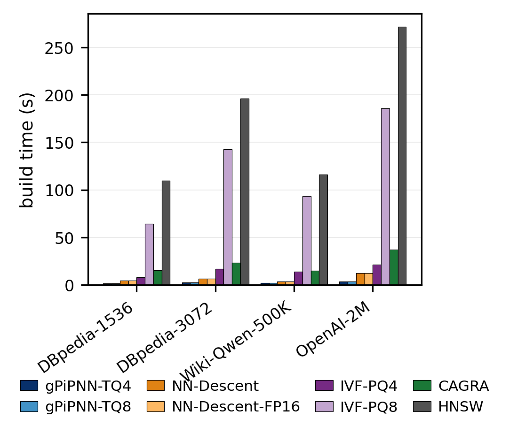
Backup: GPU baselines — the tuning protocol
- For each (method, dataset) pair we swept parameters and kept one configuration: for the ANNS index, the fastest build whose QPS-recall curve matches an unquantized ParlayANN-Vamana graph by area under the curve; for k-NN graphs, the fastest build reaching graph recall ≥ 0.9 (5,000 seeded points against brute-force top-10; “–” if nothing clears the floor).
- CAGRA was swept over graph degree ∈ {32, 48, 64} × intermediate degree ∈ {64, 128, 192}; all other methods ran at library defaults.
- RaBitQ was not used during queries for any method, including Jasper — no method gets a query-side quantization advantage.
- Asymmetry we should state plainly: on the k-NN task CAGRA is fixed at 32/128 on every dataset, while GPiPNN’s k-NN parameters are swept per dataset.
Backup: the 100M CAGRA outlier
- CAGRA’s DEEP-100M build takes 3940 s — about 4.7× slower than the 825.6 s Jasper reports for CAGRA on the same dataset and degree, on a slower A100.
- We reproduced the figure on our own H100 (3868 s) and traced it to the cuVS 25.04 large-scale CAGRA graph-build path, not the dataset.
- GPiPNN builds both 100M graphs (DEEP, MS-Turing) in ≈ 20 s — 5.4× and 8.2× faster than Jasper — but the 100M rows are excluded from the headline aggregates rather than reported against an unreliable CAGRA baseline.
Backup: full build tables

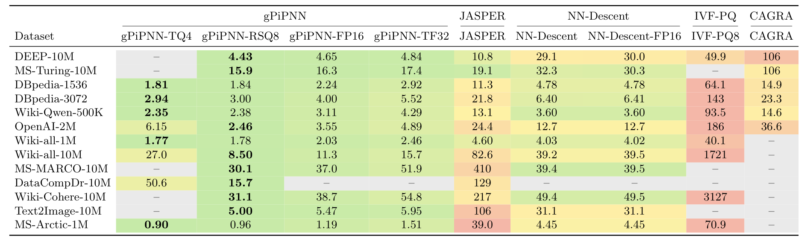
Backup: evaluation scope
- Twelve datasets across text, image and text-to-image modalities; up to one billion points on CPU and one hundred million on GPU.
- Machines — CPU: GCP c4-highmem-288 (288 vCPU, 2.2 TB, Granite Rapids) for billion-scale, c3-highmem-192 (192 vCPU, 1.5 TB, Sapphire Rapids) otherwise; GPU: a3-highgpu-1g, one NVIDIA H100 80 GB SXM5.
- Baselines — CPU: Vamana/ParlayANN (FP32), SQ8-quantized Vamana, PyNNDescent (SQ8, k-NN only); GPU: CAGRA (incl. FP16/PQ variants), Jasper, cuVS NN-Descent, cuVS IVF-PQ8.
- GPU baseline runs are capped below full scale on most datasets (10M slices; 1M for MS-Arctic) because the baselines do not complete at full scale on one 80 GB H100.
Backup: SISAP — the task in full
- Build the all-15-NN graph of 6.35M × 1024-d bge-m3 Wikipedia embeddings
- Ranked by end-to-end build time, subject to recall15@15 ≥ 0.80, scored on an unseen corpus
8 vCPUs · 24 GB RAM · no AVX-512 — 14.8 GB fp16 corpus
Backup: SISAP — a lean partition, refined, beats a rich one
- Quantized end to end: RSQ8 codes + 1-bit sign sketch, no float copy — peak 11–13.5 GB
- 1-bit Hamming pre-filter screens candidates at ~3× the RSQ8 kernel’s rate; survivors rescored
| NN-descent passes | Recall 15@15 | Total time |
|---|---|---|
| 0 | 0.646 | 70 s |
| 1 | 0.818 | 98 s |
| 2 | ≈0.85 | ≈128 s |
+0.17 recall for +40% time.
Backup: SISAP full 13-config portfolio
| Configuration | Recall 15@15 | Total (s) | Role |
|---|---|---|---|
| 5,3,1 nf24 | 0.81776 | 187.60 | winner |
| 6,3,1 em12 | 0.83928 | 187.98 | |
| 5,3,1 nf32 | 0.82655 | 189.68 | |
| 7,3,1 em12 | 0.86002 | 203.29 | OOD-safe |
| 8,3,1 em12 | 0.87610 | 216.46 | |
| 8,3,1 nf32 | 0.88256 | 236.58 | |
| 7,3,1 cs1024 | 0.88959 | 242.98 | |
| 9,3,1 nf32 | 0.89313 | 247.17 | |
| 7,3,1 nnd2 | 0.89289 | 279.68 | |
| 8,3,1 nnd2 | 0.90228 | 286.49 | |
| 9,3,1 nnd2 | 0.90948 | 309.77 | |
| 10,3,1 R2 cs1024 | 0.96220 | 1060.98 | no-Hamming hedge |
| 10,6,1 R2 cs1024 | 0.97713 | 1569.88 | no-Hamming hedge |
Fanout triple = per-level partition fanout; nf = NN-descent rescore width; em = expansion cap; nnd2 = second NN-descent pass; cs = larger leaves; R2 = two unioned replicas, no Hamming.
Backup: SISAP out-of-distribution validation
- The most aggressive configuration cleared the 0.80 bar in-distribution but fell below it on Spanish and Japanese Wikipedia embeddings under corpus shift
- The submission is therefore a portfolio, not a single configuration: the fast pick for the scored task, plus an OOD-validated fallback (7,3,1 em12: 203.29 s at 0.860) that held up under shift
- Same lesson as the drift concern: a partition tuned to one distribution degrades under another
Backup: reservoir memory arithmetic
- A reservoir slot is 8 bytes (identifier, 16-bit sector hash, bf16 distance)
- Persisting ℓ_max slots per point costs 8·ℓ_max bytes/point — about 1 KB at ℓ_max = 128
- At 100M points: about 100 GB
- Open question: shrink by persisting only recently changed leaves, or reconstructing on demand from the graph, without losing history-independence
Backup: dynamic-baseline landscape
- FreshDiskANN, IP-DiskANN, CleanANN all update in place: insert by search-and-prune, delete by tombstone + neighbor-of-neighbor repair
- Insertion inherits the search bottleneck; deletion repair is expensive and batched into consolidation phases
- CleanANN and CANDOR-Bench show recall drifts downward under sustained churn unless repair is aggressive
- The updated graph is hard to make deterministic
Backup: distributed related work
- Existing distributed vector-search systems (LANNS, Pyramid, SPANN, and others) concentrate on serving, not construction
- They build per shard (no cross-shard edges — quality suffers) or on one machine, then distribute (no scale benefit at build time)
- Distributed construction of one graph with cross-partition edges has received little attention
- Insertion-by-search makes a distributed beam search costly; PiPNN’s partition-local structure avoids it
Ongoing work — an update batch is a small dataset built into an existing partition
- Persist the partition (leaders at every level) and the HashPrune reservoirs
- Insert: route Δ through the persisted tree; per affected leaf score |Δb|·|b|, not |b|²
- Stream edges into both endpoints’ reservoirs — no graph traversal
- Delete: drop from reservoirs and re-prune from what remains; repair only overflowing/underflowing subtrees
Ongoing work — distributed PiPNN: four rounds, no coordination
- Sample + broadcast leaders
- Assign + shuffle: top-F₀ per point, quantized codes only
- Local build: partition · pick · HashPrune per machine
- Shuffle + merge reservoirs at home
Constant rounds; no coordination between machines.
PiPNN · Meta